Things I’ve been loving recently: Autumn
14 Nov 2024 · Written by Chompak Koonnawarote
Aka current obsessions
Think burgundys, think browns, think dark neutrals. If it’s made in either of those colours consider it sold. As the weather starts to cool down and sunsets are now at half-four, this is the perfect time to light up some candles, pour a cup of hot chocolate, and cozy up on the sofa with a pair of new fluffy socks. Below are some of the things I’ve been loving- fashion, lifestyle, food and all.
Tailored Coats
Especially maxi coats with structured shoulders. The silhouette of these coats screams elegance and class. Chef’s kiss.
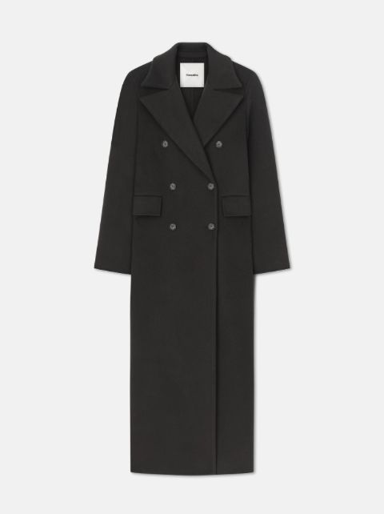
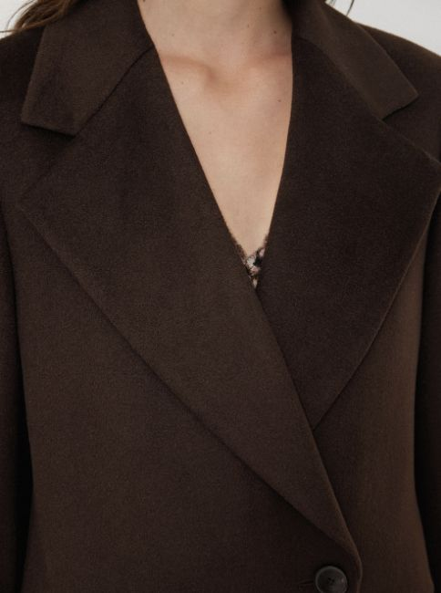
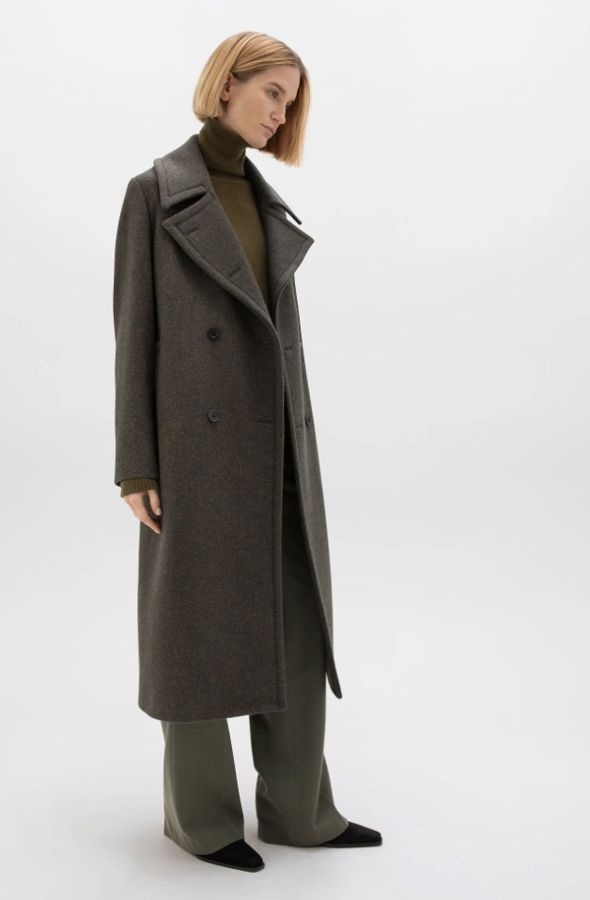
Tech Accessories
Bonus points if they’re personalised!
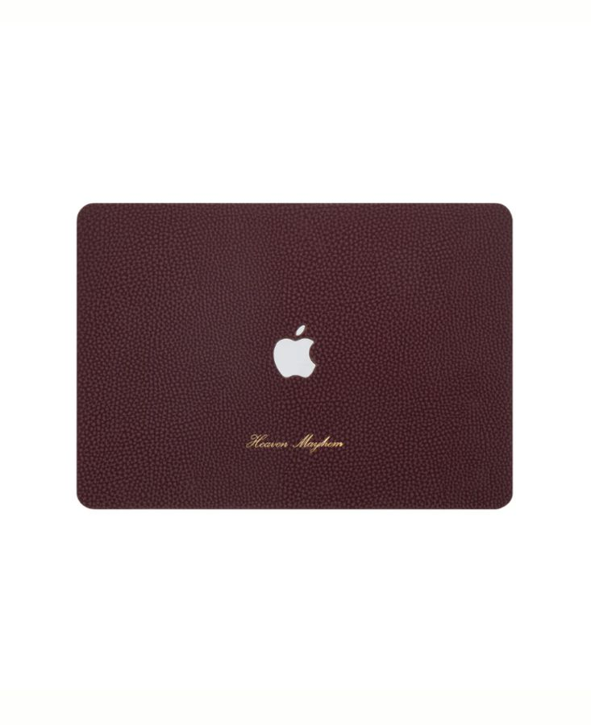
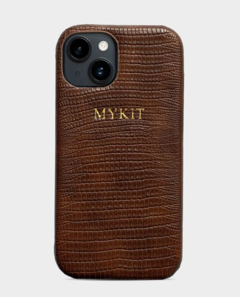
Not-your-average Ballerinas
Elevate any otherwise basic outfits with these ballerinas.
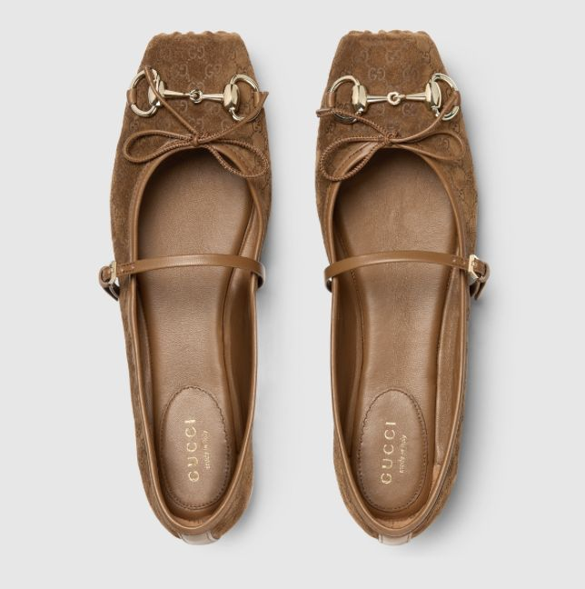
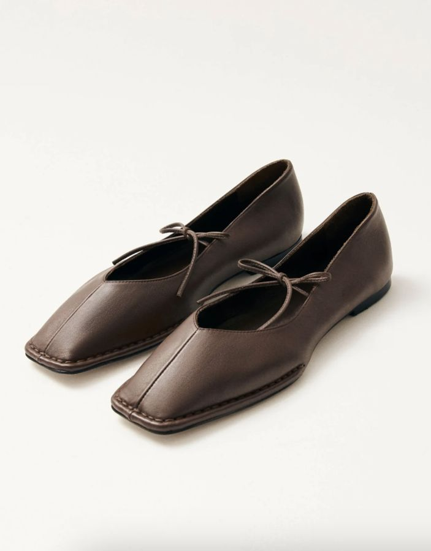
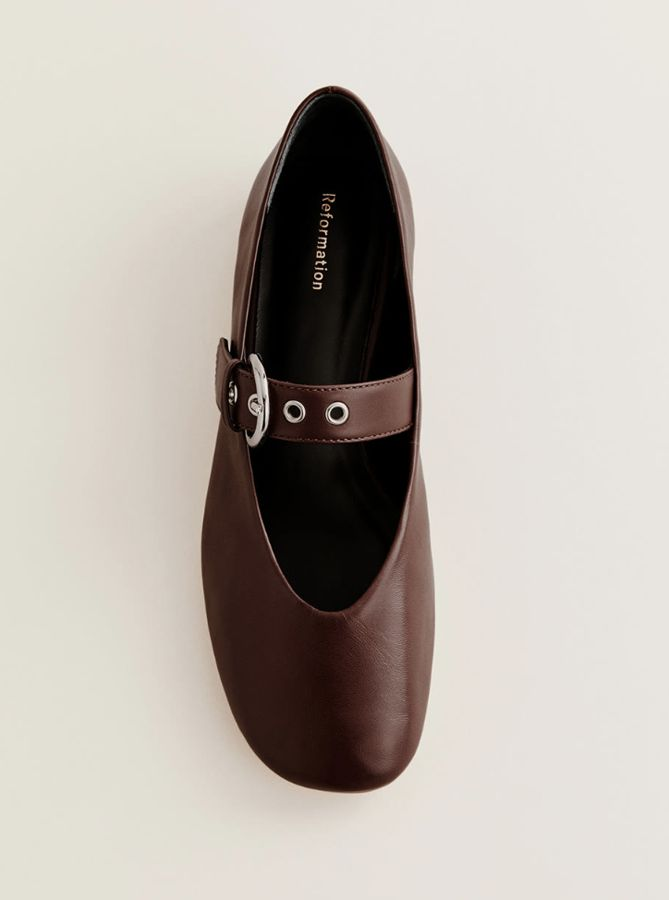
Decorative Candles
Create a welcoming atmosphere with candles that double up as home decor. Woody and smokey are my favourite right now!
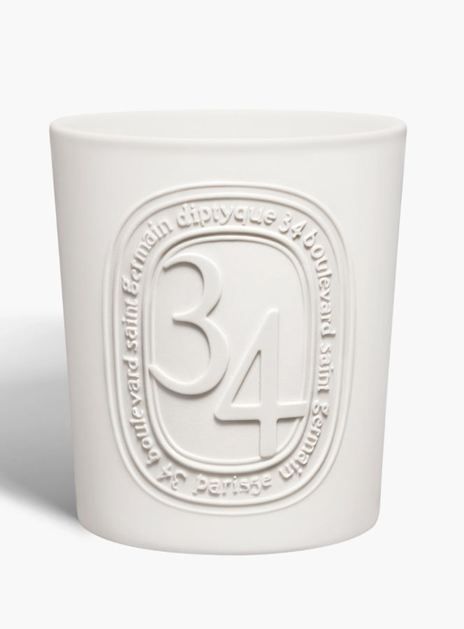
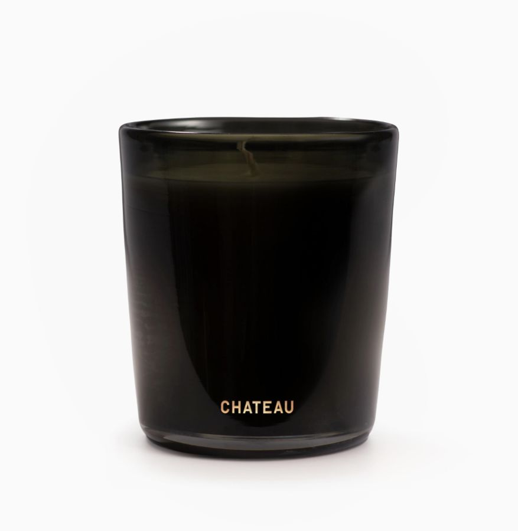
Dinners! Duh!
With Friendsgiving coming up, I am beyond excited to have the girls over- we eat good and drink good! These are my inspirations for the dinner. Sleek tablescaping, vintage ware, candelabras and whipped butters.
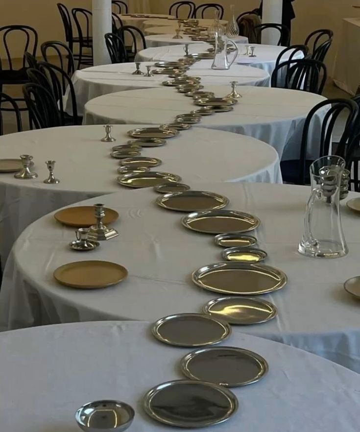
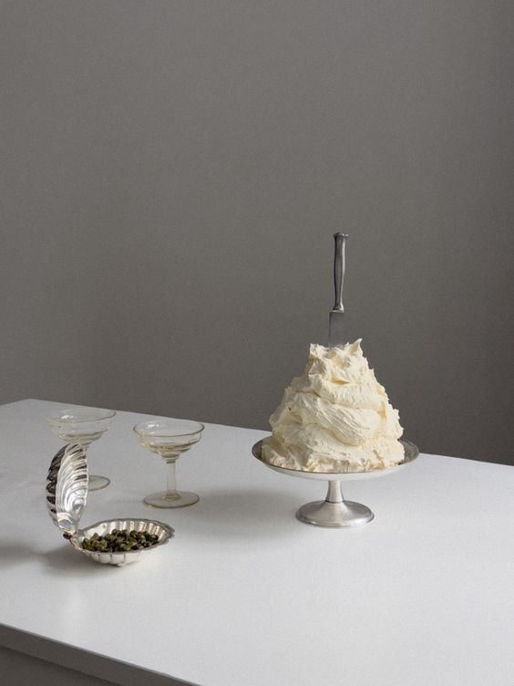
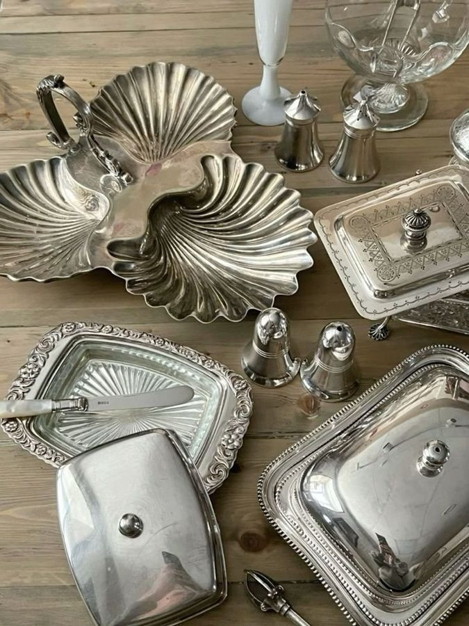
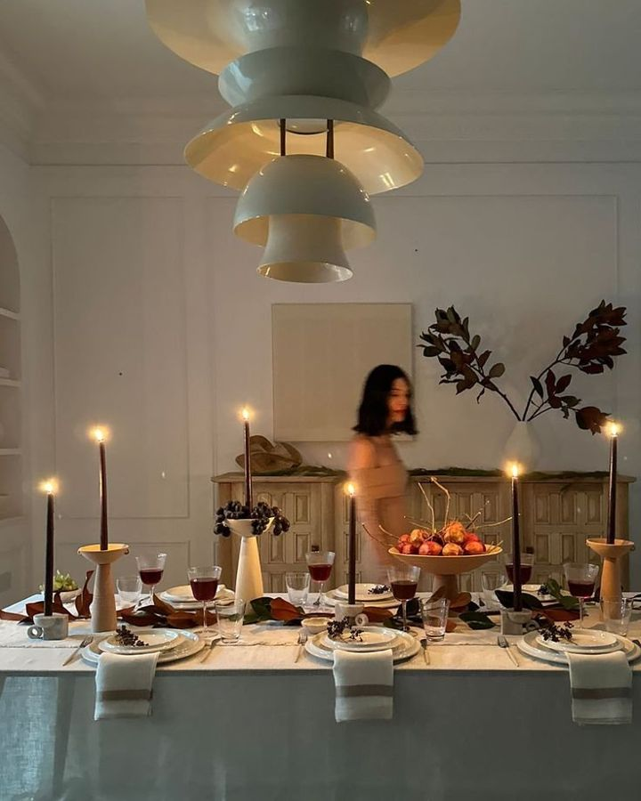